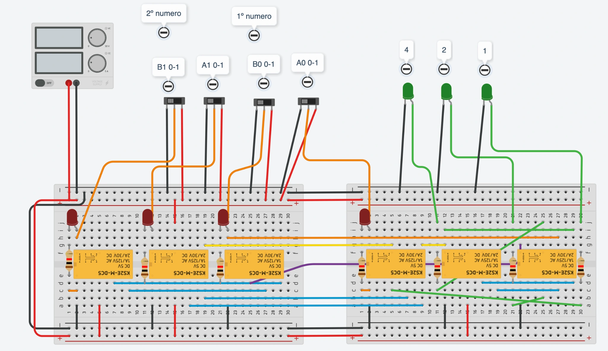

Montagens práticas
Projetos documentados com capturas, testes e notas sobre o funcionamento.
Em testes

Relay Computer — MK I
Somador de dois bits com seis relés eletromecânicos. Simulação, tabela de verdade e exemplos de funcionamento.
Ler o artigo → Em construçãoSomador de 1 bit com transístores
Da lógica eletromecânica à eletrónica digital: uma experiência com componentes discretos, ainda em desenvolvimento.
Ler o artigo →